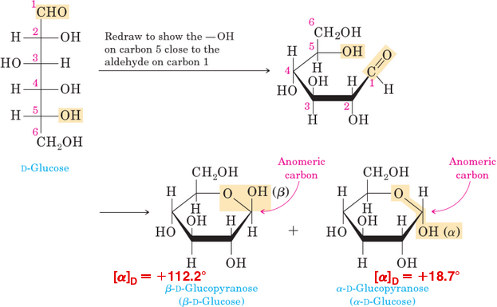
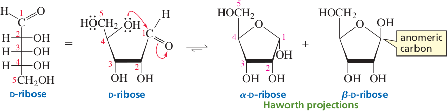

Monosaccharides form cyclic hemiacetals
D-Glucose exists in three different forms: the open-chain form of D-glucose that we have been discussing and two cyclic forms— α-D-glucose and β-D-glucose. We know that the two cyclic forms are different because they have different melting points and different specific rotations.
How can D-glucose exist in a cyclic form? We saw that aldehydes and ketones react with alcohols to form hemiacetals. We also saw that cyclic hemiacetals form very readily when hydroxyl and carbonyl groups are part of the same molecule and their interaction can form a five- or six-membered ring. For example, 4-hydroxypentanal forms a fivemembered cyclic hemiacetal.
Note that 4-hydroxypentanal contains one chiral center and that a second chiral center is generated at carbon 1 as a result of hemiacetal formation. Monosaccharides have hydroxyl and carbonyl groups in the same molecule. As a result, they too exist almost exclusively as five- and six-membered cyclic hemiacetals.
The reaction of the alcohol group bonded to C-5 of D-glucose with the aldehyde group forms two cyclic (six-membered ring) hemiacetals. In the cyclic form, the ring is called a pyranose ring, named after pyran, a simple compound that possesses a six-membered ring with an oxygen atom incorporated in the ring. To see that the OH group on C-5 is in the proper position to attack the aldehyde group, we need to convert the Fischer projection of D-glucose to a flat ring structure. To do this, draw the primary alcohol group up from the back left-hand corner. Groups on the right in a Fischer projection are down in the cyclic structure, and groups on the left in a Fischer projection are up in the cyclic structure.
Anomers are two sugars that differ in configuration only at the carbon that was the carbonyl carbon in the open-chain form. This carbon is called the anomeric carbon. The prefixes α- and β- denote the configuration about the anomeric carbon. Because anomers, like epimers, differ in configuration at only one carbon, they too are a particular kind of diastereomer. Notice that the anomeric carbon is the only carbon in the molecule that is bonded to two oxygens.
When the pure α anomer is dissolved in water, it begins to equilibrate with the β anomer, resulting in a mixture that ultimately achieves the expected equilibrium concentrations. At first, the pure anomer exhibits a specific rotation of +112°, but as it equilibrates with the β anomer, the specific rotation changes until the equilibrium is established, and the specific rotation is measured to be +52.6°. A similar result is achieved when the pure β anomer is dissolved in water. At first, the pure anomer has as pecific rotation of +18.7°, but as the mixture equilibrates, the specific rotation changes and ultimately is measured to be +52.6°. This phenomenon is called mutarotation, a term commonly used to describe the fact that α and β anomers can equilibrate via the open-chain form. Mutarotation occurs more rapidly in the presence of catalytic acid or base.
Six-membered-ring sugars are called pyranoses, and five-membered-ring sugars are called furanoses. These names come from pyran and furan, the names of the cyclic ethers.
Consequently, α-D-glucose is also called α-D-glucopyranose, and α-D-ribose is also called α-D-ribofuranose. The prefix “α” indicates the configuration about the anomeric carbon, and pyranose or furanose indicates the size of the ring.
Ketoses also exist in solution predominantly in cyclic forms. For example, D-fructose forms a five-membered-ring hemiketal because its C-5 OH group reacts with its ketone carbonyl group. If the OH group bonded to the new asymmetric center is trans to the primary alcohol group, then the compound is α-D-fructofuranose; if it is cis to the primary alcohol group, the compound is β-D-fructofuranose. Notice that the anomeric carbon is C-2 in ketoses, not C-1 as in aldoses.
D-Fructose can also form a six-membered ring by using its C-6 OH group. The pyranose form predominates in the monosaccharide, whereas the furanose form predominates when the sugar is part of a disaccharide. (See the structure of sucrose on page 1039.) Haworth projections are useful because they show clearly whether the OH groups on the ring are cis or trans to each other. Five-membered rings are nearly planar, so furanoses are represented fairly accurately by Haworth projections. Haworth projections, however, are structurally misleading for pyranoses because a six-membered ring is not flat—it exists preferentially in a chair conformation.
Conformation Representations
At equilibrium, the β anomer of D-glucose predominates, because the -OH group of the anomeric carbon is in the more stable equatorial position of the more stable chair conformation. In α-D-glucose, the -OH group on the anomeric carbon is axial. When remembering the names of D-glucose anomers, some students find it helpful to remember the phrase “alpha is axial.”